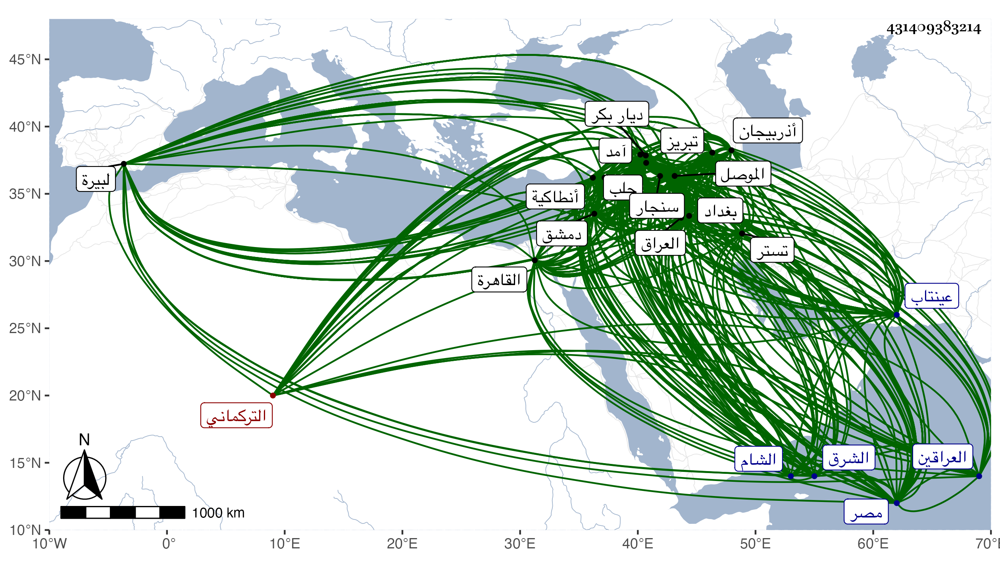

0902Sakhawi.DawLamic.ITO20230111-ara1.EIS1600.431409383214
Biography ID: 431409383214
723
قرا يوسف بن قرا محمد بن بيرم خجا التركماني والد جهان شاه الماضي كان في أول أمره من التركمان الرحالة فتنقلت به الأحوال إلى أن استولى بعد اللنك على عراق العرب والعجم ثم ملك تبريز وبغداد وماردين وغيرها واتسعت مملكته حتى كان يركب في أربعين ألف نفس وكان نشأ مع والده الذي تغلب على الموصل وملكها بعد موته سنة إحدى وتسعين وسبعمائة وصار ينتمي لأحمد ابن أويس لتزوج أحمد بأخته ويكاتب صاحب مصر وأباه وينجد أحمد في مهماته ثم وقع بينهما بحيث قتل أحمد رسله فغزاه فهرب أحمد منه لدمشق فملك بغداد سنة خمس وثمانمائة فأرسل إليه اللنك عسكرا فهرب وقدم دمشق فلقي بها أحمد فتصالحا ثم توجه قرا يوسف مع يشبك زمن معه إلى القاهرة فلما كان من وقعة السعيدية سنة سبع وثمانمائة ما كان رجع وتوجه من دمشق في صفر سنة ثمان إلى الموصل ثم إلى تبريز ثم واقع مرزا بن بكر بن مرزاشاه بن اللنك فقتله في ربيع الآخر سنة ثلاث عشرة واستبد بملك العراق وسلطن ابنه محمد شاه ببغداد بعد حصار عشرة أشهر ، ثم ثار أهل بغداد وأشاعوا أن أحمد بن أويس حي فخرج محمد شاه من بغداد وكاتب أباه فما اتفق فرجع ودخل بغداد وفر آل أحمد إلى تستر ودخلها محمد شاه في جمادى الأولى سنة أربع عشرة ، وفي غضون ذلك كانت لقرا يوسف مع أيدكي ومع شاه رخ ابن اللنك مع إبراهيم الدربندي وقائع ثم سار إلى محاربة قرايلك وكان بآمد ففر منه ثم تبعه ودامت الحرب مدة ثم حصر شاه رخ بتبريز فرجع قرا يوسف إليه وتبعه قرايلك فنهب سنجار ونهب قبل أهل الموصل وأوقع بالأكراد واختلف الحال بين شاه رخ وقرا يوسف حتى تصالحا وتصاهرا ثم انتقض الصلح سنة سبع عشرة وتحاربا وفي سنة عشرين طرق البلاد الحلبية ثم صالحه قرايلك ثم رجع يريد تبريز خوفا من شاه رخ وفي التي تليها كانت بينه وبين قرايلك وقعات حتى فر قرايلك فقدم حلب وانتقل الناس من حلب خوفا من قرا يوسف وكان قد وصل إلى عينتاب وكتب إلى المؤيد يعتذر بأنه لم يدخل هذه البلاد إلا طلبا لقرايلك لكونه هجم على ماردين وهي من بلاد قرا يوسف فأفحش في الأسر والقتل والسبي بحيث بيع صغير بدرهمين وحرق المدينة فلما جاء قرا يوسف أحرق عنتاب وأخذ من أهلها مالا كثيرا مصالحة وتوجه إلى البيرة فنهبها ثم بلغه أن ولده محمد شاه عصى عليه ببغداد فتوجه إليه وحصره واستصفى أمواله وعاد إلى تبريز فمات في ذي القعدة سنة ثلاث وعشرين وقام من بعده ابنه اسكندر بتبريز واستمر ابنه محمد شاه ببغداد ، وكان قرا يوسف شديد الظلم قاسي القلب خربت في أيامه وأيام أولاده مملكة العراقين لا يتمسك بدين واشتهر عنه أن في عصمته أربعين امرأة . ذكره شيخنا في إنبائه قال : وتقدم كثير من أخباره في الحوادث ، وذكره ابن خطيب الناصرية فقال : صاحب أذربيجان وديار بكر وبغداد وماردين وما والاها كان أولا مع أبيه فلما قتل كان من أمراء حلب وبعد ذلك عاث بمن معه من التركمان في بلاد حلب بالفساد ونهب القرى ثم توجه إلى إنطاكية ففعل بها نحو ذلك وعاقب الناس وآل أمره إلى أن أمسك واعتقل بقلعة دمشق ثم أفرج عنه المؤيد قبل سلطنته وتوجه معه إلى الديار المصرية فانهزم الناصر بعساكره فاستمر في إثرهم ولم يلبث أن قويت شوكة الناصر وانهزم المؤيد وقرأ يوسف إلى الشام وبعد ذلك توجه هذا إلى جهة الشرق فقاتل التتار بعد موت تمرلنك وكسرهم ثم وقع بينه وبين صاحب بغداد فانكسر صاحب بغداد وملك قرا يوسف بغداد وتبريز وماردين وما والاها من البلاد الجزرية وديار بكر واستمر بها وعظم شأنه وكثرت بلاده وكثر عسكره حتى مات ، وكان أميرا كبيرا شجاعا عارفا ملك العراق وأذربيجان وغيرها من تلك البلاد وكانت بلاده آمنة الطرقات بين ملك البلاد ووطأته خفيفة على التجار بالنسبة لقرا يلوك وملك بعده ابنه اسكندر .
